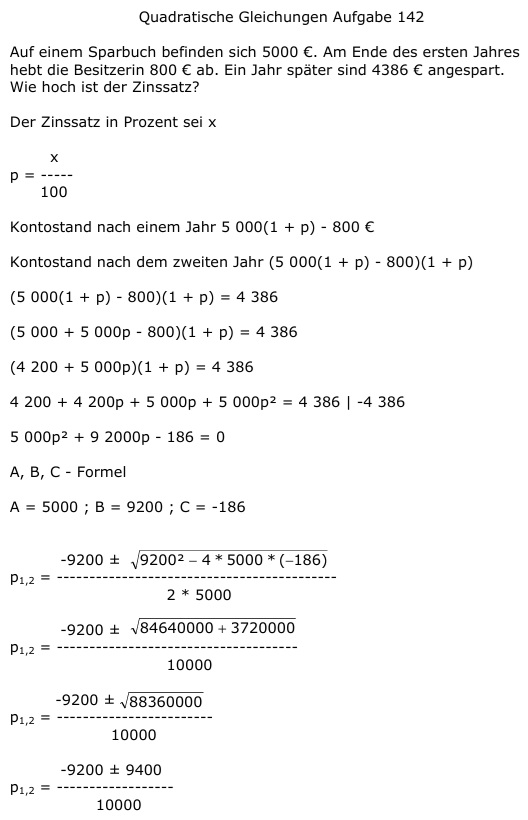

Aufgabe 142 Auf einem Sparbuch befinden sich 5000 €. Am Ende des ersten Jahreshebt die Besitzerin 800 € ab. Ein Jahr später sind 4386 € angespart. Wie hoch ist der Zinssatz? Der Zinssatz in Prozent sei x x p = ----- 100 Kontostand nach einem Jahr 5 000(1 + p) - 800 € Kontostand nach dem zweiten Jahr (5 000(1 + p) - 800)(1 + p) (5 000(1 + p) - 800)(1 + p) = 4 386 (5 000 + 5 000p - 800)(1 + p) = 4 386 (4 200 + 5 000p)(1 + p) = 4 386 4 200 + 4 200p + 5 000p + 5 000p2 = 4 386 |-4 386 5 000p2 + 9 2000p - 186 = 0 A, B, C - Formel A = 5000 ; B = 9200 ; C = -186  -9200 ± 9400 p1,2 = ---------------- 10000 -9200 + 9400 200 p1 = -------------- = ------- = 0,02 --> p = 2% 10000 10000 -9200 - 9400 -18600 p2 = -------------- = -------- = -1,86 8000 8000 keine Lösung, negativer Zinssatz